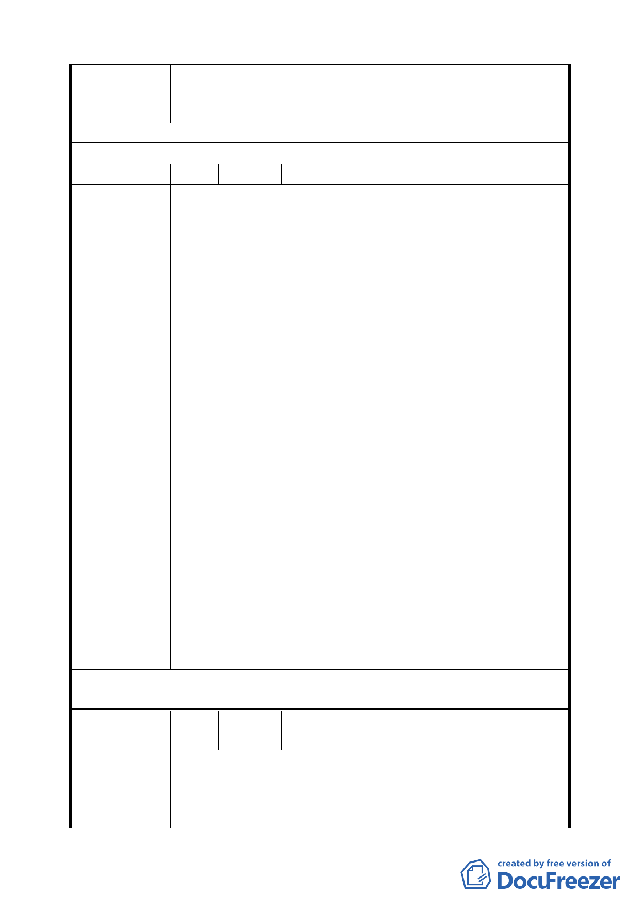

真正民意以求公平及合理以保障民眾之權益。也請 葉副市
長金川先生能實地瞭解民眾輿論，避免潦草行事而影響百姓
的權益，也不枉費市府照顧百姓的美意。
建 議 辦 法 不同意。
委 員 會 決 議 同編號 1。
編 號 21 陳情人 葉霖源（民權西路 245 巷 1 號）
針對都市計畫「擬定臺北市捷運系統新莊線（北市段）大橋
國小站聯合開發區（捷）細部計畫案」本區域多數里民及本
人（持有橋北段 3 小段 599 及 599 之 1 地號土地）堅決反對
參與該聯合開發案，敬請 貴委員會能實際瞭解本區住民的
真實民意避免引發民怨而造成憾事。
就前述做以下幾點說明：一、捷運工程局於 93 年 4 月做聯
合開發案意願調查，僅以極簡單與籠統的勾選表單詢問意見
與否，即以該資料為意願之依據，行事過於武斷草率。二、
有關單位並無告知詳細規劃細節僅以公告方式知會里民，事
後卻稱多數人之意願要強制執行該開發案，捷運工程局行事
順序顛倒，以公權力來脅迫百姓就範，為未實地瞭解真正民
意無怪乎在近期的說明會上引發激烈的民眾抗爭，反對配合
陳 情 理 由 該開發案。三、另在大橋國小站延伸至延平北路三段東西兩
側之出入口用地均為公有地並無與民有私地相衝突也不影
響該站體的整體性，故是否有必要將延平北路三段東西兩側
納入及施行聯合開發案，敬請 貴委員會再詳查實際民情意
願後再做定奪。
本區住民樂意區域的重新改造開發這對後代子孫更是莫大
助益，也是市府對本區住民的一大福利，惟美中不足的是整
體作業未能讓民眾充分明瞭，多數細節不夠清楚且欠缺公平
性與合理性，殷切期盼 貴委員會的賢達人士及專業學者們
能傾聽本區住民的真正民意後再定案，本區住民也樂意參與
貴委員會的會議或旁聽，以充分表達及反映民意，也誠摯邀
請 葉副市長金川先生能實地探討本區域瞭解民意聽聽民眾
心聲，也讓開發案能有折衷、和諧與圓滿的解決之道。
建 議 辦 法 不同意、不參與捷運聯合開發計畫。
委 員 會 決 議 同編號 1。
編
號 22
陳情人
葉霖源等 32 人（延平北路三段西側民權西
路北側範圍）
針對都市計畫「擬定臺北市捷運系統新莊線（北市段）大橋
陳
情
理
由
國小站聯合開發區（捷）細部計畫案」本區域（延平北路三
段西側民權西路北側範圍）逾七成住民及本人（持有大同區
民權西路 245 巷 1 號 1 樓之建築物與橋北段 3 小段 599 及
一三